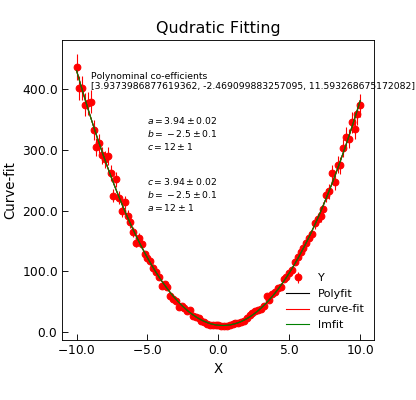

quadratic¶
-
Stoner.Fit.quadratic(x, a, b, c)[source]¶ A Simple quadratic fitting function.
Parameters: - x (aray) – Input data
- a (float) – Quadratic term co-efficient
- b (float) – Linear term co-efficient
- c (float) – Constant offset term
Returns: Array of data.
\(y=ax^2+bx+c\)
Example
"""Example of Quadratic Fit.""" from Stoner import Data import Stoner.Fit as SF from numpy import linspace from numpy.random import normal import matplotlib.pyplot as plt # Make some data x = linspace(-10, 10, 101) y = SF.quadratic(x + normal(size=len(x), scale=0.1), 4, -2, 11) * normal(size=len(x), scale=0.05, loc=1.0) s = y * 0.05 d = Data(x, y, s, setas="xye", column_headers=["X", "Y"]) d.plot(fmt="r.") d.polyfit(result=True, header="Polyfit") d.setas = "x..y" d.plot(fmt="m-", label="Polyfit") d.text( -9, 450, "Polynominal co-efficients\n{}".format(d["2nd-order polyfit coefficients"]), fontdict={"size": "x-small", "color": "magenta"}, ) d.setas = "xy" d.curve_fit(SF.quadratic, result=True, header="Curve-fit") d.setas = "x...y" d.plot(fmt="b-", label="curve-fit") d.annotate_fit(SF.quadratic, prefix="quadratic", x=0.2, y=0.65, fontdict={"size": "x-small", "color": "blue"}) d.setas = "xy" fit = SF.Quadratic() p0 = fit.guess(y, x=x) d.lmfit(SF.Quadratic, p0=p0, result=True, header="lmfit") d.setas = "x...y" d.plot(fmt="g-", label="lmfit") d.annotate_fit(SF.Quadratic, prefix="Quadratic", x=0.65, y=0.65, fontdict={"size": "x-small", "color": "green"}) d.title = "Qudratic Fitting" plt.legend(loc=4)


{kind=link}
{kind=link}